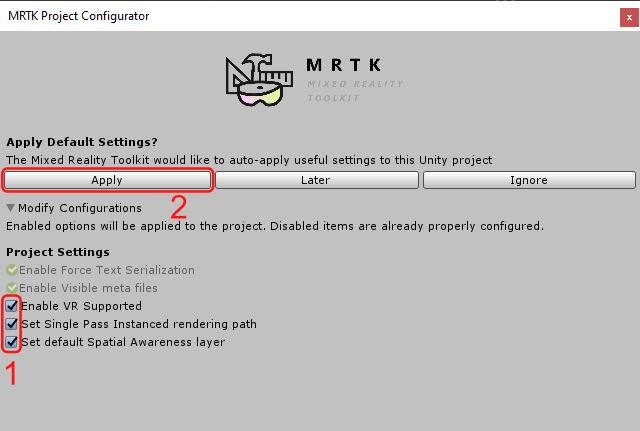

AR SDKs (started)
AR SDKs
Mixed Reality Toolkit
Please select your Mixed Reality Toolkit version:
You have selected the Mixed Reality Toolkit 2017. This version targets Unity 2017.4 and works with the HoloLens 1.
You have selected the Mixed Reality Toolkit vNext. This is the most current version. It targets the Unity versions 2018 and 2019. It works on the HoloLens 1 and 2, Immersive Windows Mixed Reality Headsets and OpenVR devices.
Introduction
The Mixed Reality Toolkit is an open-source project by Microsoft. It acts as a starting point for creating applications which target the Microsoft HoloLens and Immersive Windows Mixed Reality Headsets. The Mixed Reality Toolkit vNext also supports further platforms, e.g. smartphones and OpenVR headsets like the HTC Vive. There is a general version of the Mixed Reality Toolkit and a version for Unity.
Setup in Unity
The team that develops the Mixed Reality Toolkit regularly publishes releases which can be found on the GitHub releases page. For Unity, the project is bundled into unitypackage-files.
The Mixed Reality Toolkit 2017 release contains of the package “HoloToolkit-Unity-2017.4.3.0-Refresh”. This package is sufficient to create mixed reality applications in Unity. Further packages are optional and should only be added when needed.
There are two more packages in the release which contain “Examples” and “Preview” in their package name. The examples package contains a series of folders, scenes and prefabs which demonstrate the different features of the Mixed Reality Toolkit. Experimental features such as the sharing functionality are delivered in the preview-package. When importing the examples package, it might also be necessary to import the preview-package so that error about missing namespaces are fixed.
Once the packages have been saved on disk, they can be imported into Unity with the following steps.
- Open the Unity project and right-click on the area of the assets browser.
- Select “Import Package > Custom Package…”.
- In the following file browser, navigate to the location to which the package was downloaded. Select the .unitypackage-file und click “Open”.
- An import window will open which shows the elements which are bundled in the package. Select all of them and click on the “Import” button.
The core functionality is contained in the foundation package (“Microsoft.MixedReality.Toolkit.Unity.Foundation.x.x.x.unitypackage”). This package is sufficient to create mixed reality applications in Unity. Further packages are optional and should only be added when needed. A series of further packages is available. For instance, there is a package with the word “Examples” in its name. It contains a series of folders, scenes and prefabs which demonstrate the different features of the Mixed Reality Toolkit.
-
Download the Mixed Reality Toolkit. Go to the releases of the Mixed Realtiy Toolkit on GitHub and scroll to the latest version which is not marked as a pre-release. We are using the release Microsoft Mixed Reality Toolkit v2.3.0. In the Assets section of the release, download the Unity-package which has Foundation in its name as this is the base package. In our case, it is called * Microsoft.MixedReality.Toolkit.Unity.Foundation.2.3.0.unitypackage*.
-
Import the Mixed Reality Toolkit. To do this, perform a right-click in Unity’s Asset Browser and select Import Package > Custom Package from the context menu.

After that select the Unity-package that you just downloaded in the opened file explorer and click Open. Unity will prepare the Unity-package for the import. Next, a dialog will be shown which allows you select which content should be imported. Click All to make sure that everythin is selected and then press Import.

Once the import has finished, you will find the new folders of the Mixed Reality Toolkit in your assets.
-
After the import, a configuration window will automatically open. It states that the Mixed Reality Toolkit would like to apply some settings to prepare the Unity project for Mixed Reality development. Make sure that every recommendation in the list is checked and then click Apply.

-
In the top menu select Mixed Reality Toolkit > Add to Scene and Configure

This adds a MixedRealityToolkit GameObject and a MixedRealityPlayspace GameObject to the scene’s hierarchy.
Updating an Existing Mixed Reality Toolkit Setup in a Unity Project
Before updating to a new version, the release notes should be checked to see if any changes could break the project. Additionally, a backup of the Unity project should be created. Depending on the release notes of the new Mixed Reality Toolkit version, it might be necessary to delete the existing Mixed Reality Toolkit folders. In this case, delete the folders and import the new Mixed Reality Toolkit packages. If the release does not state such steps, it is sufficient to import the package. Unity will compare the new package with the unpacked folders and recognize updated files. The menu which controls the import of the packages will only select these changed files and files which are new The import process will only overwrite the selected elements.
UI
The Mixed Reality Toolkit contains pre-made UI elements which can be configured and customized.
Creating Buttons
The Mixed Reality Toolkit provides the means to turn any mesh object with a collider into a button.
There are different ways to create such buttons.
One option is to implement the functionality directly in a script, using the interaction interfaces like IFocusHandler and IInputClickHander.
This alternative is suitable for a complex button logic which depends on the user interaction.
However, another option are the pre-made CompoundButton scripts in the Mixed Reality Toolkit.
These compound scripts which all start with the prefix “CompoundButton” are structured in a modular way:
Each possible feature, e.g. moving when pressing the button, displaying text or reacting to spoken commands, is realized in a separate script.
Developers can add any combination of these scripts to a GameObject.
To set up a button with the compound scripts, a GameObject must be added to the scene. The GameObject should be a 3D object with a mesh so that the user can see the button’s representation. Additionally, it is necessary to add a collider to the GameObject so that the button becomes a target for the input system. The collider can also be placed on a child of the GameObject. With the button GameObject selected, the CompoundButton components can be found in the inspector panel by clicking “Add Component” and typing “CompoundButton” in the opened search bar. The list of search results shows the available ButtonCompound scripts. Any one of them can be added to the GameObject by clicking on their entry.
Compound Button
The CompoundButton is the core class which provides the necessary events for reacting to input.
Other scripts can subscribe to these events by getting a reference to the component and registering for the event.
The following events are available:
StateChange: Event raised if the state of the button is changed.OnButtonPressed: Event raised if the button is pressed down by a tap gesture.OnButtonReleased: Event raised if the pressed button is released again.OnButtonClicked: Event raised if a button is clicked, i.e. pressed and released gain.OnButtonHeld: Event raised if a button is pressed and held down for a longer period of time.OnButtonCanceled: Event raised if the interaction with the button was cancelled, e.g. if the button was pressed down and then the hand is not in the tracking area anymore.
Classes can also set the Boolean property RequireGaze in order to specify if the interaction with the button should end if it is not in focus anymore.
With RequireGaze set to false, the interaction on a button which is pressed and held down will be canceled if the user does not look at the button anymore.
Usually, the CompoundButton script is used in combination with one of the other CompoundButton components.
When adding one of them to the button, the CompoundButton will automatically be added, too.
Compound Button Mesh
The CompoundButtonMesh class can be used to change the basic properties of a GameObject with a mesh.
The properties which can be changed include its position, scale and colour.
The CompoundButtonMesh script must be added to the GameObject of the button as a component.
This is done in the usual way by selecting the GameObject, clicking “Add Component” in the inspector and selecting the CompoundButtonMesh.
This action adds a CompoundButtonMesh component and the CompoundButtoncomponent.
In the CompoundButtonMesh, a target transform and a renderer need to be set.
Next to these properties, a dropdown menu can be found which says “(None)” at the moment.
By clicking on it, a selection of the transform and renderers on the GameObject or on any of its children is presented and can be selected.
This means that the visible mesh can be separate from the object which slides the button back and forth.
For instance, a cube can be used as a background and text can be placed on the surface of the cube to label the button.
In order to move the cube and the text, they are organized as children of an empty GameObject.
If this empty object is moved back and forth to simulate a button press, the cube and the text will move by the same amount, too.
Underneath the fields for the target transform and the renderer, a button profile can be set up. This profile is a saveable configuration which can be reused for different buttons. The section with the stored values can be expanded by clicking on the “PROFILE” container. There is a button labelled “Create Profile” which creates a new profile in the root assets folder of the project. Next, the profile needs to be referenced in this section.
Compound Button Text
The CompoundButtonText component can be used to equip a button with text.
The component makes the text settings accessible in one place.
First, the corresponding text mesh needs to be referenced in the component.
This is done in the inspector either by drag-and-drop or by choosing it from the dropdown menu next to the property TextMesh.
In a big text field, the text which should be displayed can be entered.
If the reference to the text mesh is correct, typing text in the component’s text field will update the display on the button accordingly.
The CompoundButtonText can also be used to unify the text appearance on a set of buttons.
In the inspector, a profile can be selected in the part of the inspector which has a purple background.
The profile specifies the font style and size, as well as its color.
By reusing the profile on all buttons in the application, they will all be set up with the same text style.
However, one can also overwrite single properties of the profile with button-specific values.
To do so, the checkmarks next to “Overwrite Font Style”, “Overwrite Anchor”, Overwrite Size” can be set.
Compound Button Icon
If a button should be equipped with an icon, one can use the CompoundButtonIcon component.
The component requires a reference to a mesh renderer which can either be set by selecting it from the dropdown menu or by dragging the GameObject from the hierarchy into the reference field.
Often times, quadratic flat geometry is used to display the icon.
In Unity, such a square can be created in the top menu under “GameObject > 3D Object > Quad”.
The component requires an icon profile.
This profile contains a collection of textures.
By default, the profile is set up with slots for special purpose textures, e.g. for navigation or actions.
Further down, one can also define custom icons.
Apart from the textures, the profile also provides further settings in the “DEFAULTS” section.
Here, one can define a standard icon which is used if the selected icon cannot be found.
In this section, the icon’s material can be selected.
The script will apply it to the referenced mesh renderer.
At the bottom of the component, outside of the purple profile area, there is a dropdown menu where one can choose one of the icons by its name.
The material’s shader can be set to the standard shader of the Mixed Reality Toolkit which is not to be confused with Unity’s default standard shader. In order to support icons with transparency, the material’s rendering mode should be set to “TransparentCoutout”.
Compound Button Sounds
CompoundButtonSounds can add sound effects to a button.
The sounds can be configured in a profile and are played if the button enters the according state, e.g. if it is pressed or if it is targeted by the user.
A slide next to the sound configuration can be used to define the sound volume for each of the states separately.
In the component, one can optionally reference a sound source which plays the sounds.
This way, the sound source does not need to be on the button but the audio can also originate from anywhere in the environment.
However, the component also works if no audio source is referenced.
In this case, the object will create a GameObject called “one shot audio” which has an attached sound source.
It will play the correct audio clip once and after that, the auxiliary GameObject is destroyed again.
Bounding Box
The Mixed Reality Toolkit also contains a bounding box which can be added to GameObjects. One first needs to select the GameObject. In the inspector, a Bounding Box Rig script can be added to the object. The added component requires a reference to a bounding box prefab. There is already a prefab included in the Mixed Reality Toolkit which can be used here. It can be found in the assets browser under “HoloToolkit > UX > Prefabs > BoundingBoxes” and is called “BoundingBoxBasic.prefab”. With the GameObject selected, one can drag and drop the prefab into the field “Bounding Box Prefab” of the component.
The Bounding Box Rig component has further options, e.g. one can choose to flatten the boudning box in one direction. If the flattened axis is set to something else than “Do Not Flatten”, the bounding box will be two-dimensional. This can be helpful when creating flat menus. Underneath this option, three customization settings can be applied. They all concern the materials which are applied to the handles of the bounding box.
In the section below this, the behaviour of the bounding box can be altered. The scale rate describes how drastic the box’s size is changed if the user pulls on the scaling handle. In other words, if the user moves the scaling gizmo by a fixed distance, high scale rates will change the scale the object more than low rates. One can also specify a max scale for the object.
The component also holds a reference to an “app bar”. It is a small menu which is shown at the bottom of the object and which can be used to toggle the bounding box. When the Bounding Box Rig component is added, the reference to the app bar is already set up with a default app bar. However, developers can add their own app bars or extend the exiting one by inserting the reference to the altered prefab of the app bar.